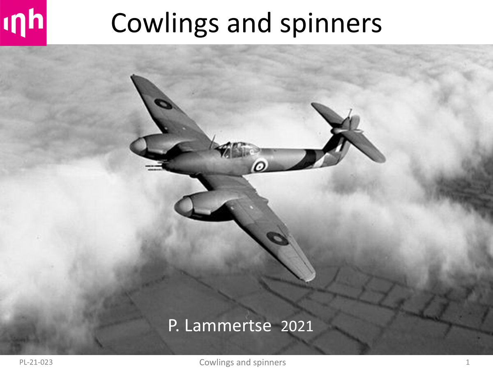

In 2021 I gave an online presentation on cowlings and spinners at InHolland Technical University in Delft.
The intended audience were students posed to help convert a Dragonfly light aircraft to electric propulsion.
The lecture is online at :
It is a bit tedious to watch due to an overload of advertisements.
Below is a text version which may be easier to flip through at your own leisure.
The first picture sports a sleek Westland Whirlwind. It shows the incredible level of perfection which cowling design had reached by the end of WW II.
TBW.